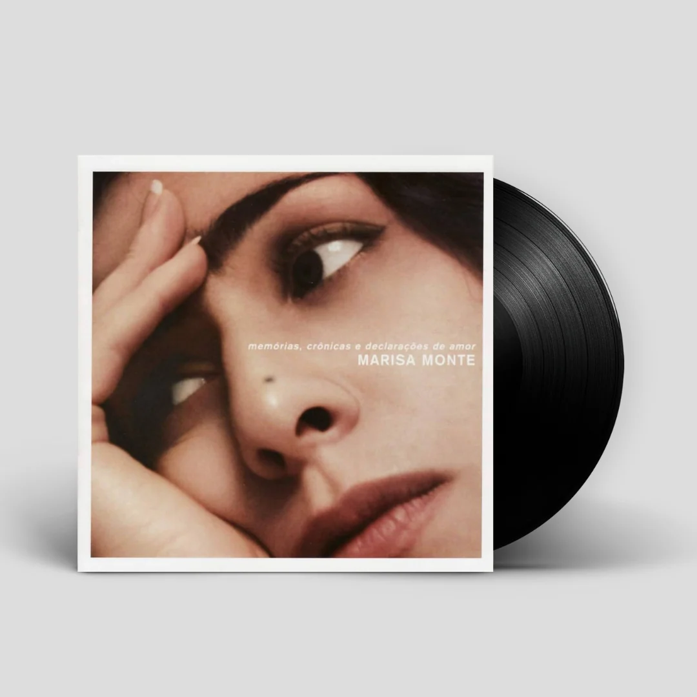

Marisa Monte - O Que Você Quer Saber de Verdade

Marisa Monte - Memórias, Crônicas e Declarações de Amor
Marisa Monte - O Que Você Quer Saber de Verdade

Marisa Monte - Memórias, Crônicas e Declarações de Amor
Marisa Monte é uma das maiores cantoras e compositoras da música brasileira. Nascida no Rio de Janeiro em 1967, ela mistura MPB, samba e pop em sua obra.
Ficou conhecida desde o fim dos anos 1980 com álbuns como MM e Verde, Anil, Amarelo, Cor-de-Rosa e Carvão. Também formou o grupo Tribalistas com Arnaldo Antunes e Carlinhos Brown, conquistando enorme sucesso.
Ao longo da carreira, recebeu diversos prêmios e segue ativa, com o álbum Portas, lançado em 2021.
Nome: Marisa de Azevedo Monte
Data de nascimento: 1 de julho de 1967
Local de nascimento: Rio de Janeiro
Universidade de São Paulo (USP), que concedeu a ela o título de Doutora Honoris Causa.
Cantora e compositora de destaque na MPB desde os anos 1980, instrumentista e produtora.
Fundadora do selo Phonomotor Records.
Integrante do grupo Tribalistas.
Estudos de Belcanto e Doutora Honoris Causa.